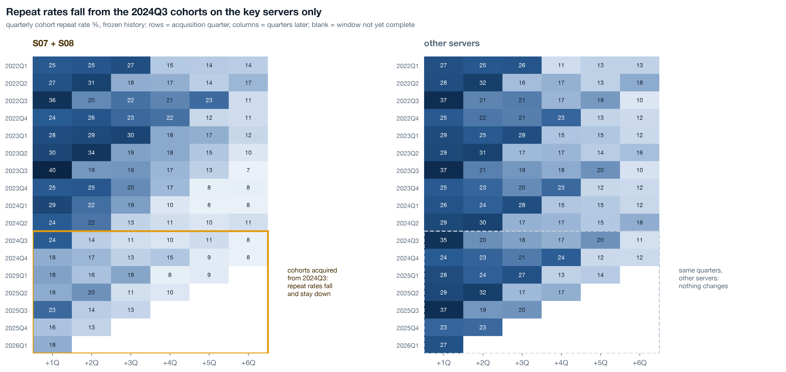
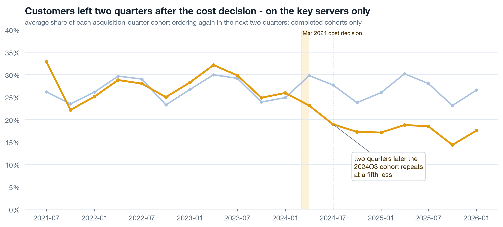
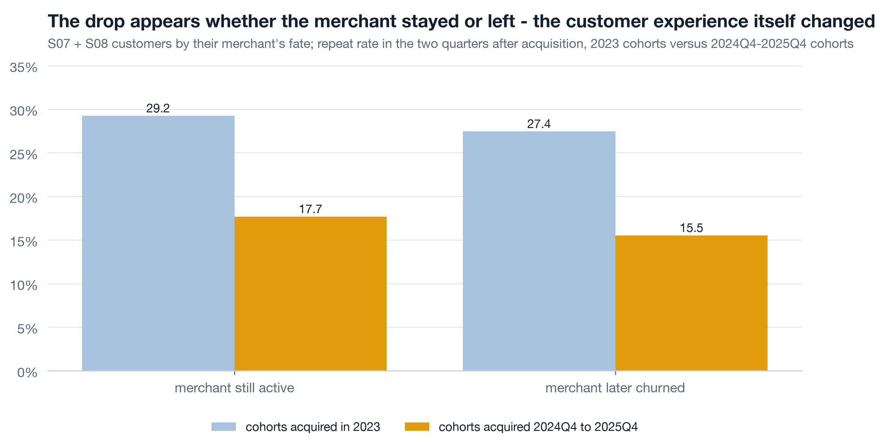
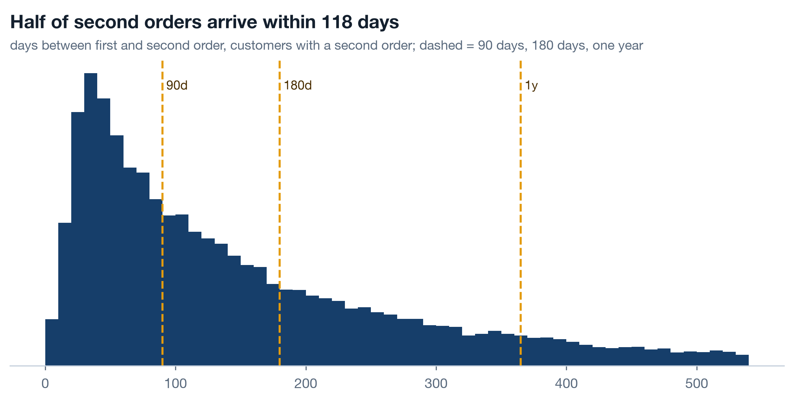
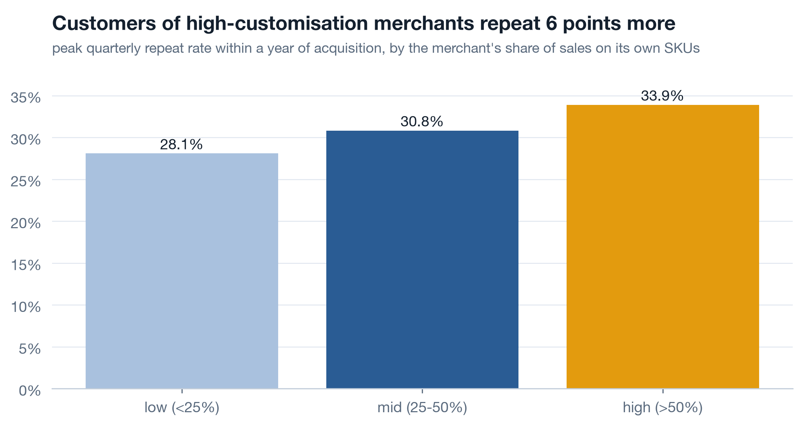

Where everything converges
a1 mapped the data and found two tables that start too late. a2 followed the margin to the March 2024 fulfilment decision on S07 and S08. a3 found that customised SKUs earn more and that bundles exist unsold. a4 found the merchant churn hazard nearly doubling after the June 2024 merchant-success cut. Today is where those threads meet the customer: did the people buying from those merchants change their behaviour, when, and because of which decision. It ends by writing reports/canon.json, so that every number on the three chairman pages traces to one executed run. Work along in notebooks/a5_customers_promotions_gaps.ipynb, loading through lib with dedupe=True; 9.9 percent of order lines are guest checkouts with no customer id and are excluded from every retention figure, and each chart title says so.
Cohort retention with frozen history 17 min live
A customer belongs to the quarter of their first order, for ever. Cell (cohort, k) is the share of that cohort with any order in quarter cohort + k. Once quarter cohort + k has fully elapsed, the cell is a fact about the past and it never changes. The quarter still running is shown blank, not as a low number that will climb as the weeks pass. This is what forward-looking cohort retention with frozen history means, and it is the professional norm for one reason: a number that restates cannot be managed to, because last quarter's 28 becomes this quarter's 31 and nobody can say whether retention moved or the calendar did.
Live The rule and the function 6 min▶
The whole rule is one function in the shared reader, and every retention number in the course comes from it. Three lines carry the norm: the cohort is the first-order period, k counts forward from it, and any cell whose period ends after the last complete period is set to NaN rather than left as a partial count.
Two other shapes get called retention and are not this. A trailing look-back window ("customers active in the last 90 days who were also active in the 90 before") recomputes every cell every day, so history moves under you. A rolling "day N or later" measure counts anyone who came back at any point after day N, so every past cell climbs each morning as late returners arrive. Both are useful for operations and neither is used for reporting, because a reported number has to mean the same thing next quarter as it did when it was signed off. A frozen cell can be put on a wall and it stays true.

Live The lag 4 min▶
Average the +1Q and +2Q cells of each cohort: the share who ordered again in the two quarters after acquisition. Plot it by acquisition quarter, key servers against the rest, completed cohorts only.

Key-server cohorts acquired in 2023 repeated at 28.8 percent on average; cohorts acquired in 2025 at 17.2. Other servers: 27.4 to 26.8, effectively flat. The customers who joined S07 and S08 in the two quarters after the cost decision still repeated at the old rate; the ones who joined from 2024Q3 did not. Whatever changed in the customer's experience took about two quarters to reach the acquisition cohorts, which is why a three-month window in mid-2024 would have shown nothing wrong with retention at all. a2 priced the margin loss; this is the retention loss that sits on top of it.
Live Two decisions, one drop 5 min▶
March 2024 changed fulfilment cost on S07 and S08. June 2024 cut the merchant-success team on the same servers, and a4 showed the merchant hazard nearly doubling. Both could explain customers repeating less. A customer whose merchant closed cannot reorder from it, so if the repeat-rate drop lives only among customers of merchants who later churned, the June cut is the lever. If the drop appears among customers of merchants who are still trading today, the experience itself changed - and that points at March.

29.2 to 17.7 for customers of surviving merchants; 27.4 to 15.5 for customers of merchants that later churned. The drop is in both, and almost identical in size. Merchant loss cannot be the main mechanism, because the customers whose merchants stayed open stopped coming back just as much. Something in the buying experience on S07 and S08 changed for everyone, and the timing fits the fulfilment shift. The June cut then compounded it by letting merchants leave faster. Two decisions, one drop, and the data can say which one is primary. What it cannot say is exactly what the customers experienced - delivery time, quality, price - because none of that is collected, which is a c3 row.
Self-study Time to second order 3 min▶
Among customers with a second order, the median gap from first to second is 118 days, and 65.2 percent of second orders arrive within 180 days. Two operational consequences follow. A quarterly cohort grain is the right granularity for this business: a monthly triangle would mostly show zeros at +1M and noise, because the typical customer does not return inside a month. And a store or customer "active in the last 90 days" definition sits just inside the median gap, so a quiet quarter is a real signal rather than a customer between orders.

Customisation, promotions, and a funnel with a date on it 12 min live
Three levers a merchant or the platform can pull, each measured with the same frozen definition where the data allows and each with its coverage stated. One points at growth, one cuts both ways, and one is a photograph rather than a film.
Live Customisation retains 4 min▶
a3 found customised merchant SKUs earn 8 to 10 margin points more than platform standard goods. The customer-side question is whether the people who buy from high-customisation merchants come back more. Group customers by their merchant's custom_share, apply the same frozen cohort function, and read the peak quarterly repeat rate within the first year for cohorts complete by 2025Q2.

Customers of low-customisation merchants peak at 28.1 percent; of high-customisation merchants at 33.9. Nearly six points, and monotonic through the middle band. Put next to a3's margin finding this is the one result on the platform that points at growth rather than repair: pushing merchants toward their own SKUs earns more per unit and keeps the customer longer. The chairman deck carries it with the same weight as the breaks, because a room that hears only what went wrong walks out defensive.
Live The promotion double edge 5 min▶
The customer dimension carries acq_channel for all five years, so promo-acquired customers can be compared with organic, referral and paid-social ones for the whole history. Two questions per channel: how big was the first basket, and did the customer ever order again. Customers acquired 2020-2024 only, so every one has had at least a year and a half to come back.

Promo-acquired customers: first basket 91.8 against 84.7 organic, ever-repeat 63.4 percent against 71.5. Referral and paid-social sit with organic on both. A promotion that buys a seven-unit larger first basket and loses eight points of repeat is buying baskets, not customers, and the c3 promo policy follows: judge acquisition promotions on the second order.
The finer question, which promotion type, can only be asked from 2025. promo_id has been stamped on order lines since 2020 but dim_promotion starts in January 2025, so every earlier id is an orphan. The comparison by type is run on the joinable window only, and the left panel shows the join coverage by year so nobody reads the right panel as five years of evidence.

Live The login funnel, 69 days 3 min▶
fact_login runs from 2026-07-01 to 2026-09-07: 69 days. It can show a funnel. It cannot show a trend, a season, or anything about 2024, and the chart title says exactly that, in the chart, so the caveat travels with the picture when it is pasted into a deck without its paragraph.

Both server groups view on 99 percent of logins and add to cart on 45 percent. Then S07 and S08 convert 16.8 percent of logins to purchase against 26.9 elsewhere. The gap opens after the cart, which is where price, shipping cost and delivery promise appear - consistent with the cost story, and not proof of it, because 69 days of one summer cannot say what the funnel looked like before March 2024. The recommendation is not "fix the cart on S07"; it is "keep login history, so that in a year this chart has a before".
Self-study Growth accounting, the monthly opener 3 min▶
Monthly active identified customers decompose exactly: actives this month = new (first order ever) + retained (active last month too) + resurrected (active before, not last month). Churned, drawn below the axis, is everyone active last month who is not active now. The identity is arithmetic, so the four bars always sum to the active line, and a monthly review that opens with it cannot mistake a resurrection wave for growth or a churn wave for seasonality.

Guest lines are not in this chart, and the share of them has grown from 6.3 percent in 2020 to 11.9 in 2026. That is a growing slice of real orders with no customer behind them in any retention figure. Every customer chart in the course says "identified customers" in its title for that reason, and the guest identity gap is a c3 row with an owner.
Canon numbers and the hand-off to the chairman deck 6 min live
The chairman pages quote about forty numbers. If any one of them is typed by hand, it will drift from the notebook the first time the data is regenerated, and the deck will contradict its own appendix. So every number lives in one file, reports/canon.json, written at the end of this notebook from the values computed above plus the a2 and a4 report files, and the pages read from it.
Live One JSON, every page 6 min▶
The export is a dict built up cell by cell as each result is computed, then serialised once with json.dumps. Never build the file as a string: a stray comma or an unescaped quote produces a file that parses on Tuesday and not on Wednesday, and the page that reads it fails silently. Cast to plain float and int first, because numpy scalars do not serialise.
The fields, grouped by which page quotes them:
| Group | Fields | Values this run |
|---|---|---|
| Retention lag | repeat_key_2023, repeat_key_2025, repeat_other_2023, repeat_other_2025 | 28.8, 17.2, 27.4, 26.8 |
| Two-event confound | confound_alive_2023, confound_alive_late, confound_churned_2023, confound_churned_late | 29.2, 17.7, 27.4, 15.5 |
| Second order | median_days_to_second_order, share_second_within_180d | 118, 65.2 |
| Customisation | repeat_low_custom, repeat_high_custom | 28.1, 33.9 |
| Promotions | promo_first_basket, organic_first_basket, promo_repeat, organic_repeat | 91.8, 84.7, 63.4, 71.5 |
| Funnel | login_conv_key, login_conv_other, login_window_days | 16.8, 26.9, 69 |
| Margin (from a2 reports) | key_margin_2023, key_margin_2025, key_revenue_2023_k .. 2025_k, key_profit_2023_k, key_profit_2025_k, bridge_key_cost_k, price_k, volume_k, mix_k | 42.3, 29.3, 686 / 884 / 765, 290, 224, -54, 6, -18, 5 |
| Price of the decision (a2) | price_old_margin_pct, price_cum_gap_k, price_months, price_avg_gap_per_month_k | 42.4, 251, 30, 8.4 |
| Leading indicators (a4) | lead_months_churned, lead_months_active, lead_rev90_churned, lead_rev90_active | 3.8, 1.3, 0, 399 |
| Scale and gaps | identified_customers, orders, merchants, stores, guest_share_2020, guest_share_2026 | 56,908, 145,640, 140, 342, 6.3, 11.9 |
repeat_key_2025 and the number came from the run. Regenerate the data, rerun a2 through a5 in order, and every page updates or every page fails loudly. Either outcome is fine. A page that keeps saying 17.2 after the number became 18.0 is the outcome that is not.
Self-study What this data cannot say 4 min▶
Five things the chairman would reasonably ask that no table in the company can answer, each already met somewhere in a1 to a5. None is dropped. Each becomes a recommendation in c3 with an owner, a first review date and the question it would unlock.
| Gap | Where it bit | What could not be said | c3 recommendation |
|---|---|---|---|
| No event log - 9 remembered rows | Every long series in a2 and a5 | What changed on product or infrastructure when a metric moved; whether March 2024 was the only change | Release, incident and decision log with timestamp, scope and owner, joined to the metric layer; writing to it is a release-gate field |
| Cost is a unit constant per SKU | a2 margin bridge | Fulfilment cost actually paid per order - shipping, supplier, returns - so the March shift is inferred, not observed | Fulfilment cost per order from the fulfilment system, monthly, owned by platform commerce |
| dim_promotion starts 2025-01 | a5 promotion types | Which promotion types worked in 2020-2024; the effect of any pre-2025 campaign on retention | promo_id resolvable for its whole life; promotion table owned as a product by marketing |
| fact_login starts 2026-07-01 | a5 funnel | Whether the S07 and S08 conversion gap is new or old; any funnel trend or season | Login and session events retained five years, not 60 days; product views and cart events added |
| Guest checkout, 6.3 to 11.9 percent of lines | Every retention figure | Repeat behaviour of a growing slice of buyers; whether guests are new customers or returning ones without an id | Guest identity from a hash of email or phone so retention includes them; owned by each merchant's customer domain |
Read the table as ownership gaps before technology gaps. The promotion table started when a module launched because nobody owned it as a product; the event log does not exist because writing down what changed is nobody's job. c3 assigns the job.
Rebuild the customer notebook ★ 20 min · everyone builds
Open notebooks/a5_customers_promotions_gaps.ipynb, run it once, then rebuild each section against lib.cohort_retention. Run a2 and a4 first: the canon cell reads their report files and fails without them, which is the point.
Identified customers. Load with dedupe=True, cut to complete months, drop blank customer ids into their own count. Print lines, identified customers and the guest share.
Triangles. cohort_retention(..., "Q", 6) for key servers and the rest. Draw both on one colour scale. Confirm the bottom-right cells are NaN, not zero.
The lag. Mean of +1Q and +2Q by cohort. Mark March 2024 and September 2024. Read off where the amber line leaves the navy one.
The confound. Map each key-server customer's merchant to alive or churned. Run the same function on each half. Compare 2023 cohorts with 2024Q4-2025Q4 cohorts.
Customisation and promotions. Band by custom_share, repeat within four quarters. Channel comparison on customers acquired by 2024. Promotion types on 2025 onward only, with the join-coverage panel beside it.
Funnel and growth accounting. Four stages by server group, window dates in the title. Monthly new + retained + resurrected with churned below the axis.
Canon. Fill the dict as you go, read the a2 and a4 report files, json.dumps once. Open reports/canon.json and check it against the table on this page.
python3 analysis/nbgen.py notebooks/src/a5_customers_promotions_gaps.py. A failed run leaves no notebook behind. Then the frozen-history test: change lib.AS_OF back by one quarter, rerun the triangle, and confirm that every cell that was complete under both dates has the same value. If a completed cell moved, the function is restating history and the reporting number is not a reporting number.
Try it yourself - this week ◐ 45 min
- Take one retention number your team reports and find out how it is computed. If it is a trailing window or a "day N or later" measure, recompute last quarter's value as it was reported then and as it is today. The difference is how much your history has moved.
- Build a quarterly frozen-history triangle for one product or region with
lib.cohort_retentionor your own version of it. Blank the partial cells. Show it next to the existing dashboard number and explain the gap in two sentences. - List the three numbers your leadership deck quotes most often. For each, name the file or query it comes from. If the answer is "someone typed it", make a canon file and point the deck at it.
What this session draws on
Cohort retention and growth accounting are standard product-analytics craft rather than a certified syllabus. The working core drawn on here:
Three questions before you go 🎯 ◐ 90 seconds
1 · The 2025Q1 cohort's +2Q cell read 19 percent in the July report. In the October report it reads 19 percent again, while the +6Q cell has gone from blank to a number. Is this the expected behaviour?
A completed cell is a fact about the past. The only thing that changes between reports is that the dashed diagonal moves one step and a new column of cells becomes complete. Late returners belong in later cells, not in earlier ones; a measure where past cells climb is a rolling look-back, which is fine for operations and never used for reporting.
2 · Repeat rate for customers of surviving key-server merchants fell 29.2 to 17.7; for customers of merchants that later churned, 27.4 to 15.5. What does this say about the two 2024 decisions?
If the drop had lived only among customers of churned merchants, the June cut would be the lever. It appears equally in customers of merchants still trading, so something changed for everyone buying on S07 and S08. Similar drops in both groups is the answer, not a failure to separate: it separates the mechanism from the confound.
3 · The login funnel shows 16.8 percent conversion on S07 and S08 against 26.9 elsewhere. A colleague wants to headline the deck with "conversion on the key servers has collapsed". What do you say?
"Collapsed" is a statement about change, and change needs a before. fact_login starts 2026-07-01, so there is no 2023 funnel to compare with. The gap is real and worth stating; the trend is unknowable from this table, and the chart title carries the window so the caveat survives being pasted into a slide.